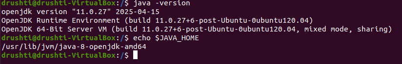
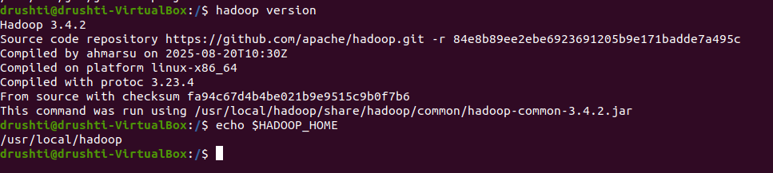
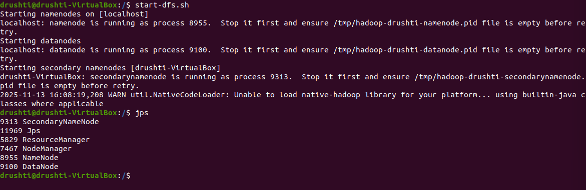
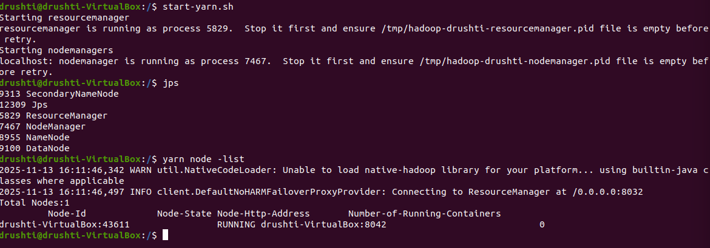

Big Data Portfolio
Hadoop Installation
Steps to install and start Hadoop on Ubuntu
Installation & Setup Screenshots
1. Hadoop Environment Setup

2. Check Hadoop & Java Version

3. Start HDFS (DFS Daemons)

4. Start YARN (ResourceManager & NodeManager)

← Back to Home